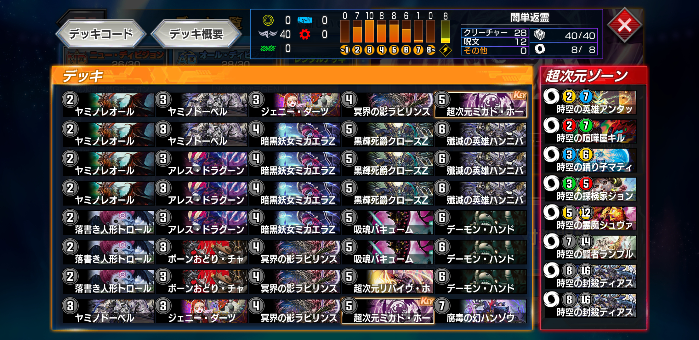
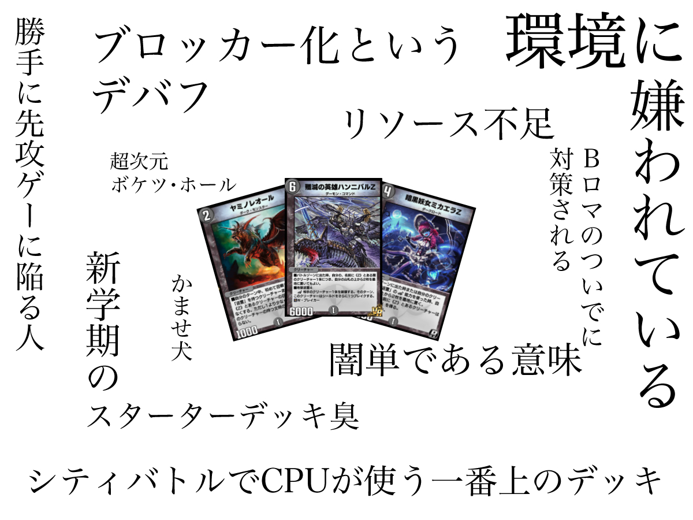
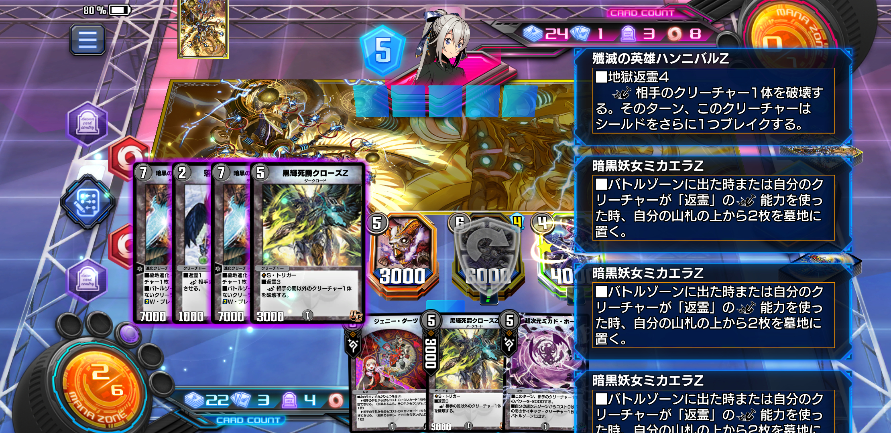

ネット縛りマスターチャレンジ【返霊ビート】
ネット縛り、再び
前回のボルシャックメビウスカップでは、日常のSNS疲れも相まりデジタルデトックスをした。その中で始めたのが、強いカード・デッキなどのネット攻略情報を絶ったままデュエプレをする「ネット縛りマスターチャレンジ」である。
【ランクマ】ネット縛りマスターチャレンジ【マスター】
ネットを縛りながらデュエプレでマスターランクを目指すことで、テンプレをコピーするままのランクマッチから脱却して自分が気持ちよくなろうとした企画だ。
結論しては「自分の頭で楽しく考えつつネットで交流も楽しんだ方がいいかもね」ということに至った。
この企画はそこそこ楽しく、また後にTwitterで局所的に反響をいただけたので、今月の最新14弾の発売に合わせてグレートチャクラカップもネット縛りマスターチャレンジを行うことにした。
行うのはNDのプラチナ5から。ADはすでにマスターランクに到達済みである。

さて新弾14弾だが、もはや事前公開されるカードを眺めてもカードパワーの見極めがもはやできなくなっている。
例えばマーシャルタッチがあるが、これはわざわざ自分のクリーチャーを手札に戻すことで発動する効果だ。従来のボードアドバンテージを稼ぐ観点から見ると、あまり有意義とは思えない。
が、他のカードと組み合わせることによってコスト論を超えたコンボが生まれる。
本格的に紙の覚醒編に突入した14弾はこういったコンボ向きのカードが非常に多く収録されており、簡単に強いカードを見つけるのが自分には困難だ。
試しに事前にデッキ編成で組んでおいたものもいくつか試してみたが、結果はさっぱりである。
そんな中、訳もわからず三連勝できたデッキがある。

レンタルデッキの「闇単返霊」である。
新ギミックである返霊は墓地のカードを山札の下に戻すことで発動する効果だ。相手の妨害やカードのコストをアドバンテージに変換できたり、デッキ切れを防ぐ恩恵がある。
ただし全てアタックトリガーであり、発動には1ターンのタイムラグがある上にシールドを割りにいくことも多い。大抵返しのターンに相手に除去されたりするのがオチだろうと思えた。
しかし、デッキ内の「殲滅の英雄ハンニバルZ」が予想の遥かに上回る活躍を見せ、ルームマッチをしていた友人ともども「ひょえええええ」と驚いてしまった。事実、ランクマではこのハンニバルが鍵となって連勝を掴むことができたので、今期はこの返霊デッキを自分なりに改造していくことにした。
が、結果を言ってしまうとプラチナ2の中ほど止まりになってしまった。
不甲斐ない結果になってしまったが、来期に向けて返霊デッキの使用感をメモしておこうと思う。
一番勝率が伸びたのはこのリストである。程よく5連勝を何度か達成してプラチナ帯を駆け上がれていたので、ゲーム内の原因は環境の理解とプレイングが自分一人では追いついてこなかったように思う。
初動はヤミノレオールとボーンおどりチャージャーであり、前者では返霊クリーチャーの展開、後者では超次元呪文の早撃ちを目標に据えたビートダウンにしてみた。
切り札はもちろんハンニバルZであり、地獄返霊による4~5ブレイクで勝負を決める。序盤は相手を妨害し、その際に貯まった墓地コストをハンニバルZで一気に吐き出す戦術をとってみた。
冥界の影ラビリンス・ローズ
4-4000の4枚墓地肥やしで、返霊で1ドロー。
闇単色でコストに対してありえないパワーを持ち、場に出るだけで破格の4枚墓地肥やし。さらに攻撃時に貴重な1ドローまでできるバケモノスペッククリーチャーである。
ただ、現環境ではこれでも「あると強い」レベルなのが恐ろしい。
ヤミノレオールから繋がると3-4000のクリーチャー化するので、相手の動きが不明な場合は一番堅実な入り方をすることができる。
ただ環境に合っているとは言い難く、代替カードはいくつか思いつくが、スペックがとにかく堅実であり、中盤ではハンニバルZの返霊コストを一発で貯められるので抜くに抜けない。なんだかんだで必須カードのような気もする。
ヤミノレオール
この返霊デッキの核になるクリーチャーであり、返霊クリーチャーのコスト軽減を担う、所謂フェアリーライフかつコッコルピアのような存在。
このクリーチャーからハンニバルZが5ターン目に着地するのが強い。
14弾の他のサイクルと比べて2-1000という小型スペックで登場しているので、このカードを使う返霊デッキは自然とビートダウンになるのではと予想した。
悪戯人形トロール
返霊持ちの所謂ゼリーワーム。このインフレした環境で2-1000のゼリーワームが強い気が全くしなかったが、思いがけない活躍があった。
2ターン目にトロールを召喚し3ターン目にジェニーダーツを打てば、それを返霊コストにシールドをブレイクしながら2ハンデスを行える。特にチャクラを超次元ゾーンに用意している相手には、それを未然に防ぐために行う。
他にも2ターン目トロールからの3ターン目ボーンおどりチャージャーも強い。5コス超次元呪文に繋げながら攻撃すれば、返霊でデッキトップを固定しながらランブルを召喚し、次のターンで確実に覚醒させられる。
バルガライゾウが相手なら、ギリギリまで返霊を行わずにバトルゾーンに待機させる。これにより相手はライゾウを手札にキープできなくなり、逆にザークピッチを手札でもたつかせられる、などがある。ただし高度な読み合いが発生するため、プレイングを磨く必要あり。
返霊の使いどころは考える必要があるが、特にジェニーダーツと組み合わせて1ターンで2ハンデスをここぞという場面で決められるところが魅力か。
返霊を発動するためにはどうしてもシールドを割りに行かなくてはならないが、むしろこの段階で積極的にトリガーを踏み、ハンニバルZの露払いをしてくれた方がいいことが多い気がする。スパークはもちろん、デモハンやジャッカルでも返霊コストが貯まるのでヨシ。
フェアリーライフだけは踏まないでね。
ミカエラZ
継続的に返霊コストを用意するオリジナルカードが用意されていた。ターン1制限がないので、ハンニバルZが地獄返霊を連射できるようになる。
ヤミノレオールから3-4000のブロッカーとして場に出せるので、カゲキリやブレードグレンオーなどの速攻対策としても非常に強い。
しかし、味方Zをブロッカー化させる効果がただただデバフであり、ハンニバルZやディアスZがGENJIで破壊させるようになる。本当に意味がわからない。
またハンニバルZが地獄返霊を使うときは一撃必殺の場面が多く、このカードで連射させる意味があるかは疑問が残る。現在はどちらかというと速攻対策で入れている。トロールやクローズZが返霊を連射できるようになるので、ミカエラZがいるのといないのとではゲームの展開が違ってくる。
問題は速攻系のデッキにGENJIが投入されるタイプも間々あり、対策したい相手に逆に崩壊させられることが多い。
クローズZ
シールドトリガーを得て、返霊で相手の闇以外のクリーチャーをなんでも破壊できる。
このクリーチャーも書いてあることが大概強いのだが、如何せん周りがもっと強すぎる。
相手より先に場に出すことでチャクラやドラヴィタ、GENJIを牽制できる。が、あくまで牽制であり、大抵は事前にボルシャックホールやシャイニーホールなどで除去されてしまうため根本的な解決になっていない。
また「闇以外の」クリーチャー限定なので、相手のランブルやディアスZ、クイーンやデスマーチなど痒いところに手が届かない。
盤面をコントロールしたいのに返霊のせいでシールドを攻撃しなければならない。
ミカエラZと同様、速攻対策のトリガーとして運用しているが……
アレス・ドラグーン
返霊で相手クリーチャーのパワーを-2000できる。紙では-3000してミルアーマを破壊できたのに、どうしてこうなった。
NDの露骨な調整を疑わざると得ない。
場に出た時に墓地を1枚肥やすようにはなったので、小回りは効くようになった。
キリンソーヤは倒せなくなったが、DJショーやデスマーチなどを安全に倒せるのは非常にありがたく、速攻対面で活躍してくれる。
反面、コントロール相手には手も足も出ないことが多いので時期によってはリストから抜ける。
殲滅の英雄ハンニバルZ
この返霊デッキの切り札。地獄返霊によって簡単に4~5ブレイカー化し、さらにどんなクリーチャーも破壊可能なので突破力は非常に高い。
地獄返霊は1回ずつ発動するので、2回発動すれば覚醒したクリーチャーも破壊できる。
紙より小型化したが依然として返霊がアタックトリガーであることが足を引っ張っており、このクリーチャーを出すまでにどれだけ相手の除去札を削って置けるかが肝になる。
アタックトリガーなので相手より早く出したいが、早く出すと堅実にデモハンで除去されてしまう……。どうにかしてスピードアタッカー化させられないだろうか。
ディアスZと相性も良く、ハンニバルの地獄返霊なら覚醒条件を簡単に満たせる。
……
ここまで各カードの使用感をメモしてみたが、正直言って自分が組んだこのデッキはあんまり強くない。
自分の使い方がわかっていないというのもあるが、なんというかいつものNDにおけるZ関連パーツの出し惜しみ感がすごく、環境で活躍させたいカードの引き立て役として調整をされている気もする。
また返霊は全てアタックトリガーであり、それをゲームのコスト論に従いながら有効に活用するということは、どの返霊クリーチャーもできるだけ相手より早く場に出したい存在である。つまりは勝手に先攻ゲーに陥ってるギミックに思えて仕方がない。
ハンニバルZ自体は環境に一矢報いる強力な効果を持つが、それゆえに先攻を取らないと間に合わないギリギリの6-6000に調整されている。
一言で言うとザンゲキマッハアーマー実装前の武者ドラゴンの使用感に近い。
もちろん自分が14弾を触った中で一番勝率を稼いでくれているし、墓地肥やしビートというデュエマで一度も使用したことのないデッキということで愛着もかなりある。

なのに自分で組んでおきながら、プレイ中に罵詈雑言も同じくらい頭に浮かぶデッキはこれが初めてだ。心が闇文明化しかけてるのだろうか。
とはいえ、これは自分一人がたった1週間で考えたデッキである。たったこれだけの期間で返霊とZの力を見抜けているとは、到底言えないだろう。
きっと返霊には、ハンニバルZには、まだ自分が気付けていない本当のスペックが用意されているに違いない。

そもそも悪態をつきながらもどうしてひたすら返霊ビートを回していたかというと、相手の攻撃を押しとどめながらお互いの墓地枚数を計算し、ハンニバルZでワンショットを決めるのが楽しすぎたからである。
ハンデスや破壊を受けてもそのまま墓地リソースに転換できる点や、また普通のプレイングでは忌避されるカードの無駄打ちなどが返霊ビートではむしろ有効になる点など、考えることが非常に多い。
また今のところはハンニバルの地獄返霊が連発可能ということが知られていないために、初見殺しが決まっている感はある。
だが、突き詰めていけば14弾環境で相手を妨害しながら、7~8ターン目に安定してワンショットを決められる可能性があると思う。
グレートチャクラカップでは自分一人の力ではその真髄を拝むことはできなかったが、ネット縛りを解禁し他のデュエリストと情報を交換すればきっと、光は見えてくるだろう。
誰か助けてくれ。
もう辛い。
一人のランクマは嫌だ。
ライゾウに轢かれるのにドロマー超次元に付き合わされるのにGENJIをトップで引かれるのにもう耐えられない。
辛い辛い辛い辛い辛い辛い辛いつらいつらいつらいつらいつらいつらいつらいつらいつらいつらいつらいつらいつらいつらいつらいつらいつらいつらいつらいつらいつらいつらいつらいつらいつらいつらいつらいつらいつらいつらいつらいつらいつらいつらいつらいつらいつらいつらいつらいつらいつらいつらいつらいつらいつらいつらいつらいつらいつらいつら
ランクマで心が破壊されたところで、今期のネット縛りチャレンジは失敗に終わった。
ハッキリ言って自分一人のキャパを超えていると思うので、ネット縛りを解禁することとした。
自力で返霊の真髄を見出すことはできないのが心残りだが、イライラしてスマホを投げるくらいなら素直に兜を脱いで、早い段階でネットを楽しみながらランクマをしていこうと思う。
さーて、久しぶりにTwitterのタイムラインでも眺めるか……
なんかやべー時期にランクマ潜ってた
※自分が使っていたカードのうち、ディアスZ、ジェニーダーツ、クローズZ、ヤミノレオールに有害なバグがあった
つづく！